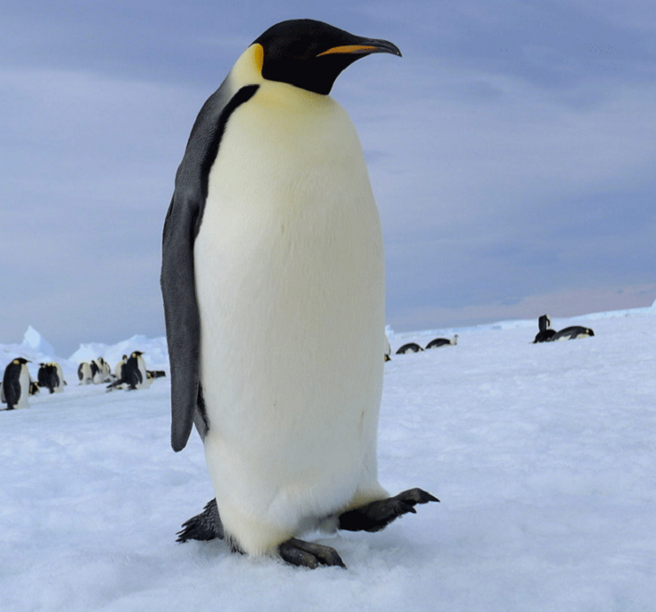
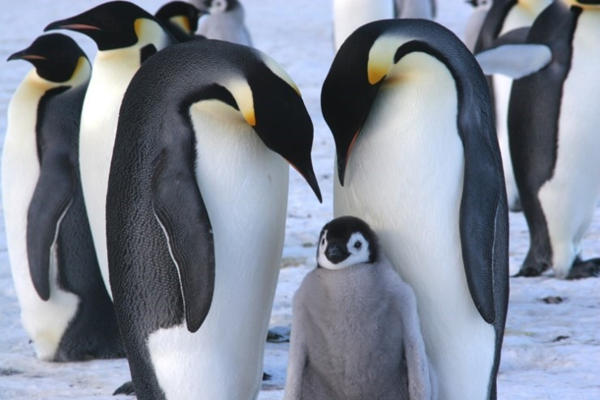
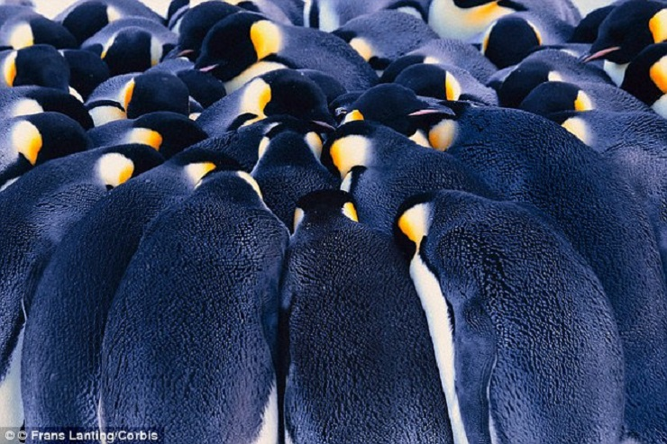

펭귄 영화 동물 보호 단체 황제펭귄 킹펭귄 아델리펭귄 훔볼트펭귄 마카로니펭귄 바위뛰기펭귄 쇠푸른펭귄 노란눈펭귄 황제펭귄 황제펭귄은 현재 존재하는 펭귄 중 가장 몸집이 커서 붙여진 이름입니다. 키: 최대 150cm 몸무게: 20kg~50kg 분포: 로스해, 케이프워싱턴(cape washington), 빅토리아랜드의 쿨먼섬 등 황제펭귄은 남극에만 서식합니다.암컷과 수컷은 덩치와 깃털 무늬가 유사하며, 등은 검고 가슴 부위는 창백한 노랑색을 띠고 있으며 귀 부위는 밝은 노랑색입니다. 조류 가운데서는 드물게 사람을 겁내어 피하지 않는 종이기도 하며, 해안으로부터 약 18km 정도 떨어진 곳에서 집단을 형성하여 생활하는 습성이 있습니다. 남극의 겨울에 알을 낳고 양육을 하는 유일한 동물입니다. 3, 4월에 집단을 형성하고 5, 6월초에 알을 낳습니다. 암컷이 알을 낳고 먹이를 몸에 비축하기 위해 바다로 떠나면 수컷이 발 위에 있는 주머니에 알을 넣고 품습니다. 알을 품고 있는 수컷들은 서로 몸을 밀착하고 서서 천천히 주위를 돌다가 바깥 쪽에 서 있는 개체가 체온이 낮아지면 안쪽에 있는 개체와 자리를 바꾸면서 전체 집단의 체온을 계속 유지하는데, 이를 허들(Huddle)이라고 합니다. 부화기간은 약 64일입니다.   
황제펭귄은 현재 존재하는 펭귄 중 가장 몸집이 커서 붙여진 이름입니다.
키: 최대 150cm 몸무게: 20kg~50kg 분포: 로스해, 케이프워싱턴(cape washington), 빅토리아랜드의 쿨먼섬 등
황제펭귄은 남극에만 서식합니다.암컷과 수컷은 덩치와 깃털 무늬가 유사하며, 등은 검고 가슴 부위는 창백한 노랑색을 띠고 있으며 귀 부위는 밝은 노랑색입니다. 조류 가운데서는 드물게 사람을 겁내어 피하지 않는 종이기도 하며, 해안으로부터 약 18km 정도 떨어진 곳에서 집단을 형성하여 생활하는 습성이 있습니다. 남극의 겨울에 알을 낳고 양육을 하는 유일한 동물입니다. 3, 4월에 집단을 형성하고 5, 6월초에 알을 낳습니다. 암컷이 알을 낳고 먹이를 몸에 비축하기 위해 바다로 떠나면 수컷이 발 위에 있는 주머니에 알을 넣고 품습니다. 알을 품고 있는 수컷들은 서로 몸을 밀착하고 서서 천천히 주위를 돌다가 바깥 쪽에 서 있는 개체가 체온이 낮아지면 안쪽에 있는 개체와 자리를 바꾸면서 전체 집단의 체온을 계속 유지하는데, 이를 허들(Huddle)이라고 합니다. 부화기간은 약 64일입니다.